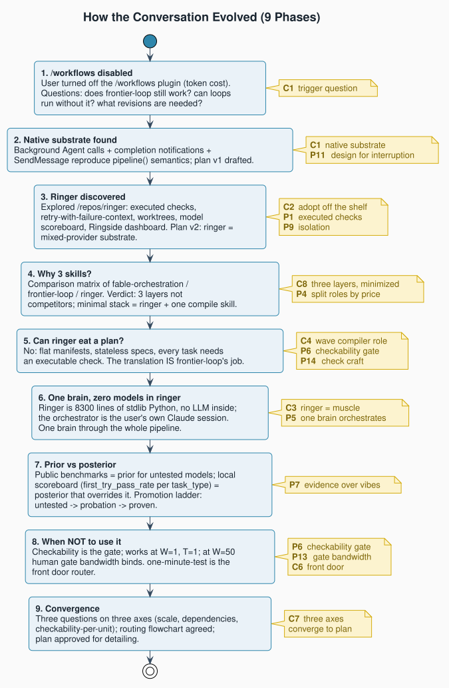
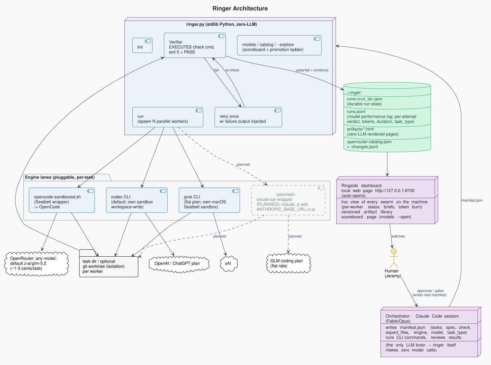
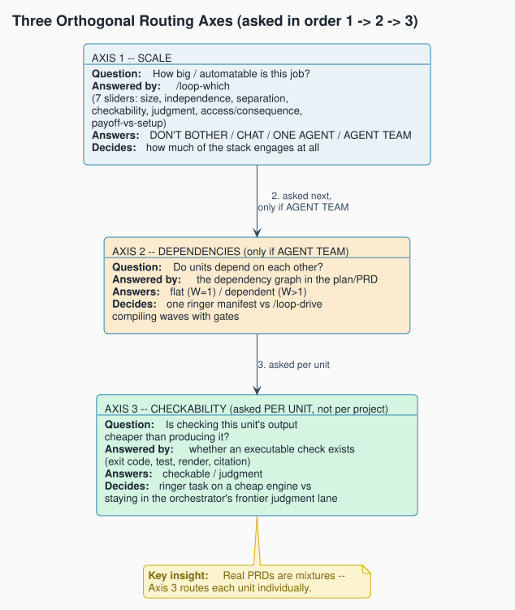
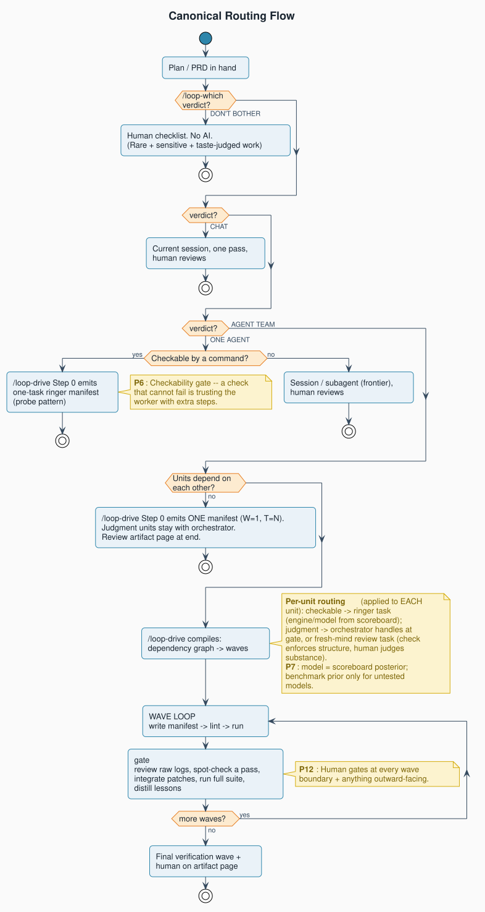

0Overview
Jeremy turned /workflows off after it burned too many tokens, then asked whether
frontier-loop would still work and whether agent-team loops were possible without it.
Nine exchanges later, the session had converged on a three-layer architecture (router, compiler, executor), found
an off-the-shelf execution substrate (Ringer, by Nate B. Jones - 8,300 lines of zero-LLM
stdlib Python) that made building a fourth layer unnecessary, and produced a full implementation plan. The
routing front door, the one-minute-test, is also Nate B. Jones's framework; frontier-loop and fable-sandwich
are Jeremy's own skills.
This guide is organized around the session's seven aha moments, backed by a compact reference of every principle (P1-P14) and critical-path choice (C1-C8) the session named. Each principle carries a provenance badge, because the reader should know at a glance what came from prior materials versus what this session actually invented:
inherited drawn from Nate B. Jones's work (Ringer, the one-minute-test framework) or the ~loops articles by their named authors - jeremy's from Jeremy's own pre-session skills (frontier-loop, fable-sandwich), built on his workflow and architecture - hybrid an existing idea this session elevated or reframed - ours generated in this session, with no prior source.

1Aha moment: "Loops don't need /workflows"
Turning off /workflows did not remove the ability to orchestrate agent teams. The
primitives it wrapped were already native: parallel background Agent calls (each with its
own model override and worktree isolation), completion notifications that reproduce
pipeline() semantics (a validator launches the moment its implementer finishes,
with no artificial barrier between units), and SendMessage to carry a repair pass back to
the same implementer with full context intact.
The one real loss: no detached, durable pipeline. The orchestrating session has to stay alive for the whole
run, which makes the loop's own interruption-and-resume design load-bearing rather than optional
P11. That single tradeoff is C1: native primitives
replace pipeline(), at the cost of session liveness.
2Aha moment: "Ringer has NO model in it"
The correction that closed the loop: when Ringer's own documentation says "the orchestrator," it means
whatever process is typing ./ringer.py run. Ringer itself is 8,300 lines of
stdlib Python with zero LLM calls of its own. It is muscle, not brain
C3.
There is exactly one brain through the whole pipeline: the same Claude Code session that brainstorms, researches, drafts the PRD, compiles it into waves, drives each wave, and reads the gate - never a different model judging a different model's work P5.
This reframed what "adopting Ringer" actually meant. It wasn't adding a fourth orchestrator to compete with the Claude session; it was adding a verified execution substrate underneath a session that was already the only brain in the room C2.

3Aha moment: "Checkability is the routing gate"
Work only enters the swarm when checking the output is cheaper than producing it P6. That's a property of the work's shape, not its size. Taste-only work - naming, strategy, "is this good?" - fails the test outright: judging it costs as much as making it, so adding more agents just produces a larger pile of fluent options.
"A check that cannot fail is trusting the worker with extra steps." - P1, echoed again in P6's framing of the routing gate.
When NOT to use the stack
- Taste- or judgment-dominant work (naming, strategy, "is this good?").
- Work coupled to the live session that needs real back-and-forth.
- When writing the check would cost more than just doing the task inline.
- Rare, sensitive work that a human reviews anyway regardless of what produced it (the one-minute-test's tax-folder example).
This is also why validators never fix and implementers never grade P3: the model that wrote the code is too close to it to be the one deciding whether the check should pass.
4Aha moment: "Benchmarks are the prior; your scoreboard is the posterior"
Two routing signals, opposite ends of the evidence spectrum, and they compose P7:
model-benchmarks.md (fable-sandwich) | ./ringer.py models | |
|---|---|---|
| Evidence | Public benchmark suite, someone else's task categories | Your own executed-check outcomes, per model and task type |
| Nature | A prior - signal about models you've never run | A posterior - ground truth on your tasks, your specs, your machine |
| Freshness | Manual refresh | Every attempt appends a row |
| Portability | Portable across users | Deliberately not portable |
The promotion ladder ties the two together: benchmarks decide which untested model earns an audition slot; the scoreboard decides when it's proven - three or more tasks, first-try pass rate at or above 0.67. A small slice of every suitable run keeps auditioning cheap or free candidates so the local bench refills itself. Numbers are not portable between users, which is exactly why the local log has to exist at all.
5Aha moment: "Three questions on three axes"
The flowchart Jeremy sketched was 90% right, but it conflated two verdicts (DON'T BOTHER versus CHAT) and merged two independent axes (dependencies and checkability) into one question. The fix, unfolded into three separate axes each owning one decision C7:
- Scale (one-minute-test): none / chat / one agent / team.
- Dependencies (only if team): flat → one manifest; dependent → compile into waves.
- Checkability (asked per unit, not per project): executable check → ringer task; judgment → orchestrator's own lane.
That last correction is the important one: real PRDs are mixtures of checkable and judgment-shaped work. Routing per unit, at the compile step, is what resolves a mixed PRD instead of forcing the whole project into one bucket.

6Aha moment: "Marginal overhead is flat; gate bandwidth is the constraint"
The stack works at W=1, T=1 by design - Ringer's own framing is that a single task is a one-task manifest. Per-task overhead is just a spec and a check, roughly 1-3k orchestrator tokens, and that cost curve stays nearly flat as task count grows P13.
What does not stay flat is the top end. At W=50 the binding constraint isn't compute, it's the human: every wave gate is a review sitting, and a loop that buries the human in thirty unreviewed PRs is a failed loop with good throughput P12. Practical ceilings back this up too (opencode's sqlite locking under simultaneous spawns).
"W=50 is almost always a mis-compiled W=8." - the session's conclusion, P13.
Practically: big jobs want fewer, fatter waves, not more, thinner ones. This is also why C6 (one-minute-test as the front door) matters - low marginal overhead is exactly what makes "everything looks agent-shaped" tempting, and DON'T BOTHER has to remain a legitimate, frequent verdict to guard against it.
7Aha moment: "The skills are layers, not competitors"
Asked why three skills instead of one, the answer split them into three layers with almost no overlap: router → compiler → executor C8.
| fable-orchestration | frontier-loop | ringer | |
|---|---|---|---|
| What it is | A prompting style-guide | A plan compiler | An execution substrate |
| Layer | Prompting discipline | Planning / structuring | Execution / verification |
| Runs anything? | No | No (emits a plan doc) | Yes, real workers |
| Trigger frequency | Passive, every session | Rare, once per project | Constant, every batch |
| Unique contribution | Fable footguns (reasoning-extraction reroute, effort caps) | Dependency waves + validator tier + resume design | Executed verification + evidence scoreboard |
fable-orchestration turned out to be about 30% inside frontier-loop; frontier-loop's implementer/validator/retry structure is about 70% of what Ringer does natively out of the box. The minimal-stack verdict: if only one survives, keep Ringer. Keep frontier-loop only if multi-wave dependent builds are real for you. Fold fable-orchestration's roughly ten unique lines into CLAUDE.md and skip it as a standalone skill P4.
8The pipeline: one brain, a wave loop underneath
From Exchange 5, the full shape once "one brain" and "Ringer has no model" both land. Everything above the wave loop happens once; the wave loop repeats until the job is done.
YOUR CLAUDE CODE SESSION (Fable or Opus - the only orchestrator anywhere)
│
├─ brainstorm ──────────── superpowers:brainstorming
├─ research ────────────── subagents (or a ringer research-with-proof run)
├─ plan / PRD ──────────── writing-plans / fable-sandwich
├─ compile to waves ────── frontier-loop: deps -> waves, steps -> specs+checks
│
└─ THE WAVE LOOP (same session, repeating):
write wave-N manifest
./ringer.py lint && ./ringer.py run <- ringer: dumb, verified muscle
── wave gate (this is the session again) ──
read run JSON + raw logs of any retry/fail
spot-check one PASSING artifact
apply patches to integration branch, run full suite
fold lessons into next wave's specs
write wave-N+1 manifest from wave-N's results
Verification happens in three nested layers: per task (the executed check), per wave (the gate - a post-run ritual plus the full suite on the integration branch), and once at the end of the job (a final verification wave of adversarial-review tasks plus a cold end-to-end task, then the session, then the human on the Ringside artifact page) P12.
9Reference: every principle and choice
All fourteen principles and eight critical-path choices, one line each, with provenance. Full text lives in
principles.md.
Principles
- P1inheritedVerification is the heart of the loop. An executed check beats a model's opinion of a diff.
- P2inheritedWorker self-reports are worthless. Judge raw evidence, not the implementer's narrative.
- P3inheritedMaker and checker must be separate minds. Validators never fix; implementers never grade.
- P4inheritedSplit roles by the price of judgment. Frontier plans and arbitrates; cheap workers type.
- P5inheritedOne brain orchestrates, or evaluation drifts. One model owns planning and scoring throughout.
- P6hybridCheckability is the routing gate. Work enters the swarm only when checking beats producing.
- P7hybridRoute models by evidence, not vibes. Public benchmarks are the prior; the local log is the posterior.
- P8inheritedBounded failure, isolated blast radius. One retry with context; a second failure stops that unit only.
- P9inheritedIsolation is what makes parallelism safe. One worktree per worker; deliverables must be exported.
- P10inheritedState is memory; distill or repeat forever. Durable state stays small; logs only ever get longer.
- P11jeremy'sDesign for interruption. The loop must die safely at any moment and never resume a half-done unit. The graceful-resume design is Jeremy's, from his frontier-loop skill.
- P12inheritedHuman gates scale with risk, not with size. Autonomy is earned per lane by evidence, not granted globally.
- P13oursMarginal overhead is flat; gate bandwidth is the constraint. W=50 is almost always a mis-compiled W=8.
- P14inheritedCheck craft is as important as spec craft. Checks were the top failure source in practice.
Critical-path choices
- C1ours/workflows off; native primitives replace pipeline(). Costs a durable detached pipeline; the session must stay alive.
- C2oursAdopt Ringer off the shelf rather than build an execution layer that would duplicate ~70% of it, worse.
- C3oursRinger has no model in it; the orchestrator is your own session. Ringer is muscle, not brain.
- C4oursfrontier-loop becomes the wave compiler, not a parallel orchestrator: plan → waves → manifests.
- C5oursProvider mix is config, not skills. GLM and OpenRouter are engine blocks, not new skills.
- C6oursone-minute-test is the front door. DON'T BOTHER is a legitimate, frequent verdict.
- C7oursThe architecture decision is three questions on three axes: scale, dependencies, checkability per unit.
- C8oursKeep three skills as three layers, minimized: router → compiler → executor.
10The canonical routing flowchart
This is the converged flow from Exchange 8: /loop-which (then named one-minute-test) decides scale first, dependencies decide wave structure second, and checkability is asked separately for every unit of work.

Two corrections mattered here: DON'T BOTHER (no AI, human checklist) is not the same verdict as CHAT (one pass in the current session, human reviews). And "do units depend on each other" is a genuinely separate axis from checkability - a judgment-heavy team need usually resolves to a fresh-mind review task inside Ringer, whose check enforces structure while the human judges substance, rather than routing through /loop-drive on the judgment axis at all.
11Execution day: what the build proved (2026-07-11)
The plan was executed the day after it was written - and the session executing it was itself the loop pattern: an Opus 4.8 agent did the keystrokes, the Fable session validated evidence at each gate, and the two decisions the plan reserved for the human came back to the human. Frontier judgment before and after cheap execution, applied to building the thing that does exactly that.
The plan's WI-4 "verify first" flag paid for itself. The claude engine's sketch said
sandbox_args = [], and verification showed that on this machine a bare
claude -p has full filesystem and bash access with no flags at all,
because the global ~/.claude/settings.json sets
defaultMode: bypassPermissions. An empty sandbox_args wasn't a sandbox - it was
silent inheritance of an invisible global.
The decision: make bypass explicit
(sandbox_args = ["--permission-mode", "bypassPermissions"]) rather than pretend to
confinement. The real isolation layer for workers was never their permission mode - it is run-level worktrees,
disjoint file ownership, and the executed check (P9). Config should document reality, not hide behind defaults.
What landed, all evidence-backed
- Three engine lanes, all probes PASS:
claude(haiku/sonnet workers on the subscription),claude-zai(GLM flat-rate via a 5-line wrapper),opencode(anything on OpenRouter). Each probe's check demanded an exact computed string, so it could genuinely fail. - Verified mechanics: ringer sets each subprocess's cwd to the task dir itself, so claude engines need no
{taskdir}placeholder; stdin arrives closed; raw logs land per task. For flat-rate lanes,token_regexis a deliberate no-match - cost is on-plan, so token accounting is noise. - RED-GREEN skill revision worked as designed: the frozen pre-edit skill demonstrably emitted
pipeline()plans (the /workflows-off failure); the revised skill emitted correct plans on both substrates, including a lint-clean ringer manifest. - Two-wave end-to-end dry run: all three engines in one job, one Ringside entry across rounds, and a wave-2 check that independently recomputed wave-1 facts - a worker that hadn't read the upstream artifacts would have failed it.
"Ground all progress claims in actual tool output, not summaries." - the single most load-bearing line in every agent brief this session sent. The orchestrator then re-verified the key claims itself before relaying them.
12Harness gotchas discovered while building
Four operational facts about Claude Code that no document in the stack predicted, found the hard way:
-
Every subdir of
skills/loads as a skill. The plan said "back up the old skill tofrontier-loop.bak" - and the backup immediately loaded as a live, stale duplicate skill. Backups must live outside any skills/ scan path. The plan was amended. -
Skills may really live in
~/.agents/skills/with symlinks from~/.claude/skills/- a harness-neutral home, one symlink per harness. A naivecp -Rof a "skill directory" can copy a symlink instead of content. install.sh now offers this as its default style. - Deferred tools bite silently. SendMessage (continue a background agent with context intact) exists but must be schema-loaded before use; calling the Agent tool instead spawns a fresh, context-free agent that can only report "I have no idea what you're talking about." The recovery pattern: a self-contained re-brief carrying the completed agent's findings - which worked, because the checkpoint report had captured everything that mattered. Reports that survive their author are what make handoffs recoverable (P11, applied to agents rather than quota).
-
Surface coverage is binary, not graded. CLI, desktop app, and IDE extensions share the same
~/.claude/engine and config - the whole stack works identically in all three. The web (claude.ai/code) is a cloud sandbox that sees only repo-committed config: skills could travel via a project's.claude/skills/, but the machine-local substrate (CLIs, tokens, ringer) cannot. Native Windows needs admin for symlinks; WSL behaves like Linux.
13Names and packaging: the stack gets its own identity
one-minute-test became loop-which (it answers "which approach do
I need?" - and DON'T BOTHER is one of the answers, so "which" includes "none"). frontier-loop
became loop-drive (it compiles waves and drives them; the orchestrator being a
frontier model is an implementation detail, not the identity). With the package already named loop-stack,
/loop-which → /loop-drive → ringer reads as one pipeline.
The rename cost nothing in triggering because skill names don't trigger - descriptions do. The old phrases ("one-minute test", "Fable Sandwich") stay in the descriptions as aliases; muscle memory and provenance survive the rebrand. "Fable Sandwich" became the model-agnostic "Frontier Sandwich" the same way.
loop-which's verdict now ends with a Map: a compact flow diagram of where the verdict sits and what command comes next - always plain monospace text in a fenced code block, never Mermaid, never a generated image, so it renders identically everywhere. The handoff model ("each skill's output names the next command") became literally visible.
Distribution: why the repo + install.sh wins
Plugin research settled the packaging question for now. Claude Code plugins carry skills beautifully (a git repo
with .claude-plugin/marketplace.json is a marketplace), but they have no
install phase: they cannot append the managed CLAUDE.md block, write ~/.config/ringer/,
run doctor checks, or offer symlink styles. Of the installer's six jobs, a plugin does one. An npx-style installer
adds npm overhead to what git clone && ./install.sh already does. So: the repo
stays the source of truth, install.sh stays the installer (two styles, agents default; doctor warns about missing
engine CLIs but never fails), and the plugin split - skills in a marketplace, machine setup as a documented
prerequisite - waits until the stack survives its first real project, per the plan's own deferral decision.
/loop-which, and let the verdict route it.
14Launch UX: see the "go" before it fires (2026-07-12)
A short revision session on loop-drive, driven by one instinct of Jeremy's: the moment between "plan approved" and "workers launched" was invisible. You said go, things fired, and the first feedback was a completed (or failed) worker. Two additions close that gap.
A dashboard describes what will run; a dry run proves it. The distinction came from
Jeremy's reaction to the first draft ("love the idea of a test run or verification of what actually will kick
off when you say go!"). loop-drive's Step 7 now executes the pre-flight checklist for real -
./ringer.py lint, engine presence, clean tree, worktree-able state - and prints
the exact wave-1 launches (commands and Agent briefs) without starting any worker. The same
checkability principle that gates the workers (P6) now gates the launch button.
What landed in loop-drive
- Topology diagrams with every recommendation (Step 0): a fast text sketch - ASCII or fenced mermaid, never a rendered export - of orchestrator, waves, workers, validators. Same plain-text-only rule as loop-which's Map (section 13), for the same reason: renders identically everywhere, costs nothing.
- Close calls get both diagrams: if two shapes or substrates are roughly 60/40 or tighter, diagram both, name the lean and why, let the user pick.
- Step 7 "Drive dashboard, then launch": one multi-select prompt at execution approval -
Dashboard (condensed routing table + topology diagram), Dry run (above), Watch points (native: per-unit logs
and the run-state artifact; ringer:
tail -f <workdir>/logs/and the run JSON in~/.ringer/runs/). Nothing selected means launch immediately. Once per run, never per wave - a visibility feature that fired every wave would become the nag it replaced. - The example skeleton moved in lockstep:
example-output-plan.mdgot the diagram and a watch-live line, because emitted plans are compiled from the skeleton as much as from the rules.
Skill-weight learnings
- A conciseness pass is also a consistency audit. Jeremy asked that the skill "not falter under its own weight"; the trim pass netted out roughly 110 words of prose while adding the dry-run feature - and caught a real error on the way (the intro cited P13 where the body cites P12).
- Weight control is structural, not editorial. The durable defense against skill bloat is the existing split - SKILL.md keeps decisions, the three references files keep substrate detail - not ever-tighter prose. Steps 1-5 were left dense on purpose: each line is a distinct hazard or contract earned from real runs.